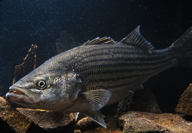

Maryland Registry
Background
Maryland pioneered the concept of a Watershed Resources Registry in 2006, when a team of federal and state agencies began evaluating impacts related to a large-scale transportation project in southern Maryland. The potential cumulative impacts from this project made obvious the need for a tool that would allow agencies to cooperatively evaluate projects and to employ consistent spatial datasets. With the publication of the 2008 Compensatory Mitigation Rule, the need to select mitigation sites based on watershed needs became more pressing.  Staff from US Environmental Protection Agency Region 3, Maryland Department of Transportation State Highway Administration (MDOT SHA), and the Army Corps of Engineers – Baltimore District decided to start a WRR project. Other participating agencies include Maryland’s Department of Natural Resources, Department of the Environment, and Department of Planning, and the U.S. Fish & Wildlife Service.
Maryland's eight analyses were made available in an easy-to-use interactive map in 2011. Two years later Maryland updated the spatial analyses with new spatial data and adjustments to the system. Maryland's WRR has been continuously operating since 2011.
Additional Resources
Spatial Analyses
Get more information about the spatial analyses and factors selected by the state of Maryland for their models.
View HereListing of Map Services
Get more information about the map layers that are available on the Maryland WRR interactive map.
View HereUser Guide
Get more information about the WRR application and how to use it successfully.
View HereContacts
For more information on Maryland's WRR you can contact the following:
| Name | Agency | Phone | |
|---|---|---|---|
| Rachel Marks | Maryland Department of Natural Resources | (410) 260-8388 | rachel.marks@maryland.gov |
| Theresa Foye | Maryland Environmental Service | (410) 729-8534 | tfoye@menv.com |
| Sandy Hertz | Maryland Department of Transportation | (410) 865-2780 | shertz@mdot.state.md.us |
| Ray Li | US Fish and Wildlife Service | (410) 573-4522 | ray_li@fws.gov |
| Donna Buscemi | Maryland Department of Transportation, State Highway Administration | (410) 545-8558 | dbuscemi@sha.state.md.us |
| Rebecca Chojnacki | Maryland Department of Transportation, State Highway Administration | (410) 545-8543 | RChojnacki@sha.state.md.us |
| Jeannette Mar | Federal Highway Administration | (410) 779-7152 | jeanette.mar@dot.gov |
| Kelly Neff | Maryland Department of the Environment | (410) 537-4018 | kelly.neff@maryland.gov |
| Nick Ozburn | US Army Corps of Engineers, Baltimore District | (410) 962-6083 | nicholas.r.ozburn@usace.army.mil |
| Ellen Mussman | Maryland Department of Planning | (410) 767-1385 | ellen.mussman@maryland.gov |
Special funding from the American Association of State and Highway Transportation Officials (AASHTO) has supported Maryland staff time to reach out to other states to share its experiences with a WRR, including workshops, travel and webinar. The WRR team appreciates its support.
Partners